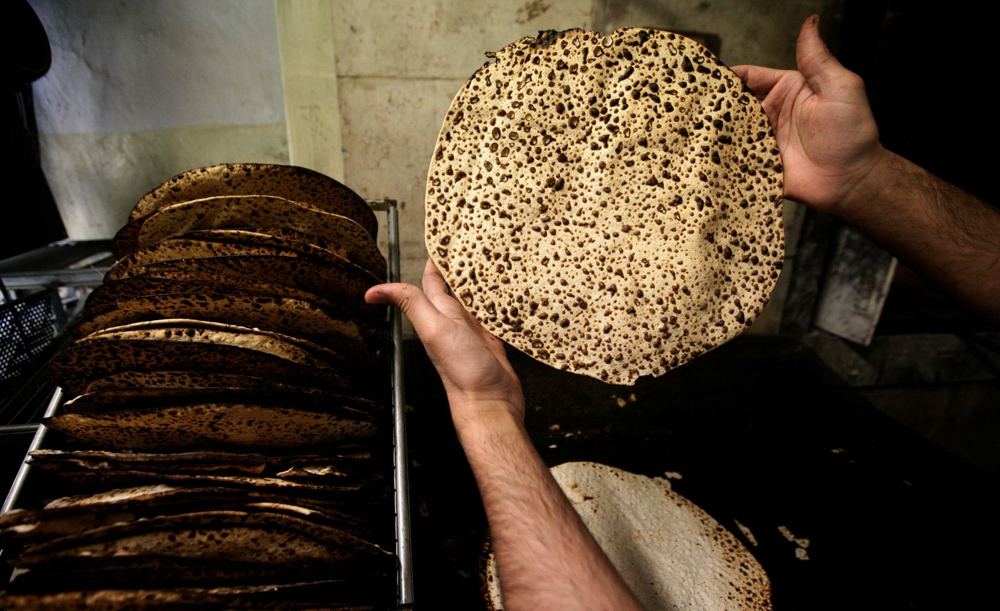
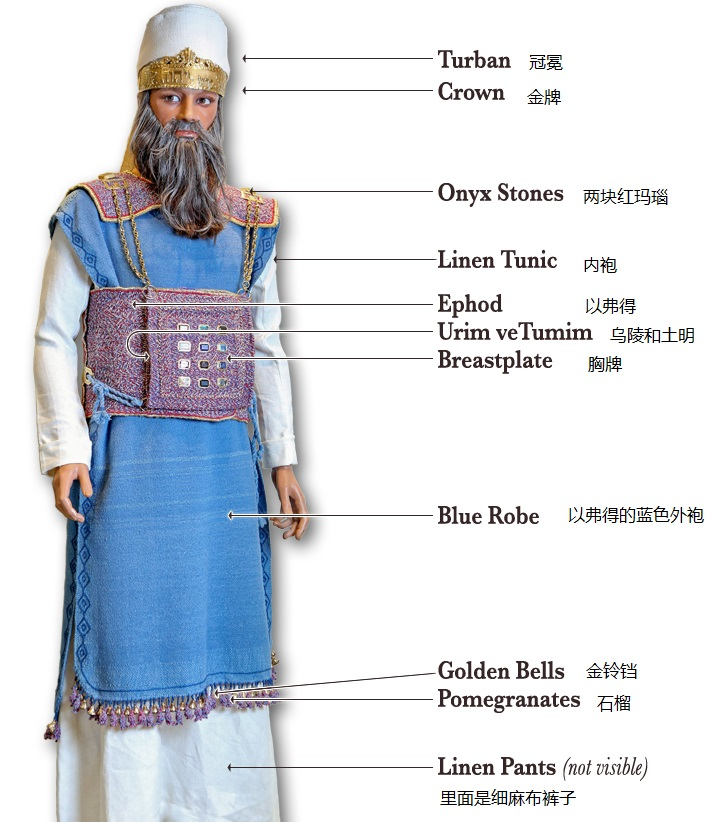
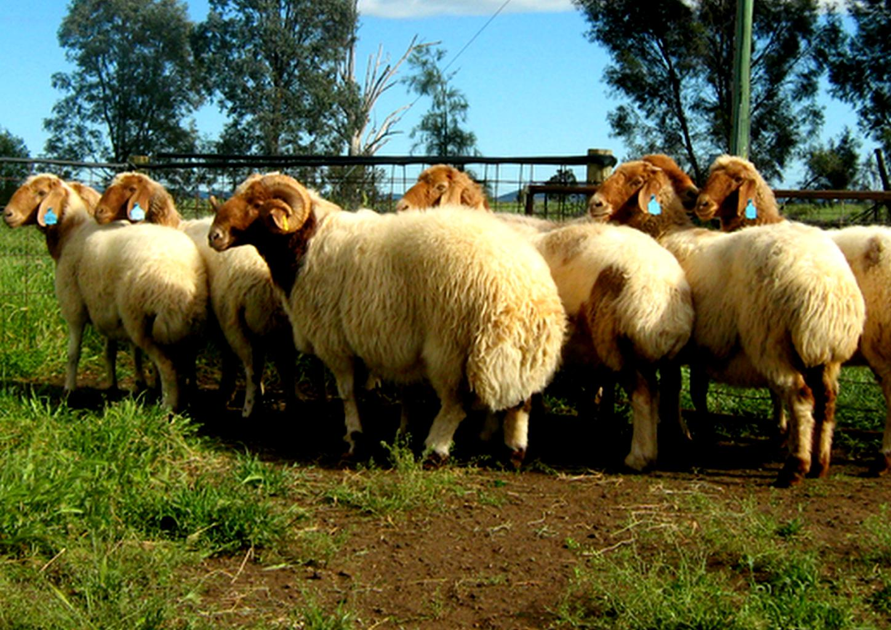
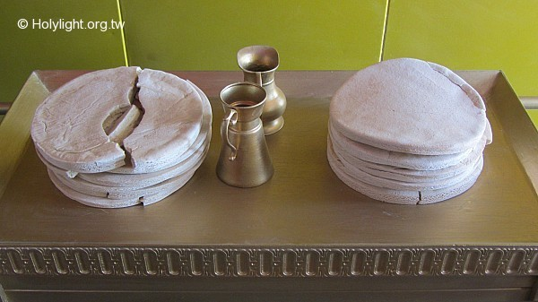

| 讀 | 默想 |
|---|---|
|
1 「『你使亞倫和他兒子成聖，給我供祭司的職分，要如此行：取一隻公牛犢，兩隻無殘疾的公綿羊，」 2 「無酵餅和調油的無酵餅，與抹油的無酵薄餅；這都要用細麥面做成。」 3 「這餅要裝在一個筐子裡，連筐子帶來，又把公牛和兩隻公綿羊牽來。」 |
使「亞倫和他兒子成聖」，表明「成聖」並不是根據人自己的所是和所作，既不是因為人的品德高尚，也不是因為人的立志努力，而是根據「承接聖職的禮」所表明的基督的工作。因此，雖然哥林多教會問題多多，但他們也被保羅稱為「聖徒」（林前一2）。因為所有的新約信徒都是被基督的寶血買來「歸於神」的（啟五9），並且「又叫他們成為國民，作祭司歸於神，在地上執掌王權」（啟五10）。 |
|  | 所有重生得救的信徒都是「有君尊的祭司」（彼前二9），都當接受「祭司的職分」，進入事奉的地位。沒有罪人有資格事奉神，然而因神的羔羊耶穌基督的血，潔淨我們的罪，我們就當分別為聖，接受祭司的職任。 |
|
4 「要使亞倫和他兒子到會幕門口來，用水洗身。」 5 「要給亞倫穿上內袍和以弗得的外袍，並以弗得，又帶上胸牌，束上以弗得巧工織的帶子。」 6 「把冠冕戴在他頭上，將聖冠加在冠冕上，」 7 「就把膏油倒在他頭上膏他。」 8 「要叫他的兒子來，給他們穿上內袍。」 9 「給亞倫和他兒子束上腰帶，包上裹頭巾，他們就憑永遠的定例得了祭司的職任。又要將亞倫和他兒子分別為聖。  |
「亞倫和他兒子到會幕門口來」（4節），但還不能進去，必須先在會幕門口做三件事: 1) 潔淨（4節）：第一次承接聖職時要「用水洗身」 2) 穿衣（5-6節；8-9節）：人裡面潔淨了，然後才能披戴基督，外面活出基督的生命。穿衣的順序是先穿象徵聖潔的潔白「內袍」和象徵屬天、君尊榮耀的藍色「以弗得外袍」（5節），然後才穿上用來事奉的「以弗得」和「胸牌」（5節），再束上象徵基督榮耀、尊貴和豐富生命的「以弗得巧工織的帶子」（5節），最後戴上榮耀的「冠冕」和「歸耶和華為聖」的「聖冠」（6節）。神把人墮落後所失去的榮耀，借著基督一件一件地恢復在人身上。祭司並不穿鞋子，因為他在神面前「所站之地是聖地」（出三5）。 你們受洗歸入基督的都是披戴基督了。（加拉太書三章27節） 3) 受膏（7節；三十30）：「膏油」（7節）在聖經中通常代表聖靈，「膏油倒在他頭上」（7節），代表聖靈的印證。受膏象徵蒙神揀選擔任某種事工，君王（撒上十1；十六1）、祭司都要接受受膏的儀式。「彌賽亞」、「基督」原文的意思就是「受膏者」。 |
| 禱：親愛的天父上帝。救恩來自於祢。一切供應來自於祢。呼召來自於祢。我感謝祢，藉著耶穌基督寶血的救贖。我得稱為義。祢又呼召我。成為君尊的祭司。祢讓亞倫和他的兒子。承接聖職。要先用水洗潔凈。穿上祭司的衣服。並且受膏接受聖職。主耶穌，我來到祢的面前。藉著聖洗禮。按祢話語的應許。我們重生得救，成為上帝的兒女。就蒙祢呼召，成為君尊的祭司。我的心要穿上祢所預備為榮耀，為華美的祭司聖袍，披帶基督公義的外袍。並且接受聖靈的膏油，被聖靈充滿。我願意自潔，脫離卑賤的事，作祢貴重的器皿，成為聖潔，為祢使用，預備行各樣按祢旨意的善事。奉耶穌基督的名禱告，阿們。 | |
| 10 「你要把公牛牽到會幕前，亞倫和他兒子要按手在公牛的頭上。 11 你要在耶和華面前，在會幕門口，宰這公牛。 12 要取些公牛的血，用指頭抹在壇的四角上，把血都倒在壇腳那裡。 13 要把一切蓋臟的脂油與肝上的網子，並兩個腰子和腰子上的脂油，都燒在壇上。 14 只是公牛的皮、肉、糞都要用火燒在營外。這牛是 贖罪祭。 |
在開始實際事奉之前，還必須獻上三個祭牲 第一個是「贖罪祭」，尋求神的赦免。 「按手在公牛的头上」（10节），象征与祭牲联合，由祭牲代替人被杀赎罪。只有蒙赦免的罪人才能在神面前事奉祂。「 基督献了一次永远的赎罪祭，就在神的右边坐下了」（来十12），十字架的救恩使人因信称义、罪得赦免，有了进入事奉的基础。 |
| 15 「你要牽一隻公綿羊來，亞倫和他兒子要按手在這羊的頭上。 16 要宰這羊，把血灑在壇的周圍。 17 要把羊切成塊子，洗淨五臟和腿，連塊子帶頭，都放在一處。 18 要把全羊燒在壇上，是給耶和華獻的燔祭，是獻給耶和華為馨香的火祭。 |
第二個是「燔祭」，尋求神的悅納。 「按手在這羊的頭上」（15節），象徵與祭牲聯合，由祭牲代替人整個被燒在神面前，毫無保留地完全獻上，「盡心、盡性、盡意、盡力愛主——你的神」（可十二30），尋求神的悅納。 一個已經蒙恩得救的人，因著對神的愛，「將身體獻上，當作活祭，是聖潔的，是神所喜悅的；你們如此事奉乃是理所當然的」（羅十二1）。 |
| 19 「你要將那一隻公綿羊牽來，亞倫和他兒子要按手在羊的頭上。 20 你要宰這羊，取點血抹在亞倫的右耳垂上和他兒子的右耳垂上，又抹在他們右手的大拇指上和右腳的大拇指上；並要把血灑在壇的四圍。 21 你要取點膏油和壇上的血，彈在亞倫和他的衣服上，並他兒子和他兒子的衣服上，他們和他們的衣服就一同成聖。 22 「你要取這羊的脂油和肥尾巴，並蓋臟的脂油與肝上的網子，兩個腰子和腰子上的脂油並右腿（這是承接聖職所獻的羊）。  23 再從耶和華面前裝無酵餅的筐子中取一個餅，一個調油的餅和一個薄餅， 24 都放在亞倫的手上和他兒子的手上，作為搖祭，在耶和華面前搖一搖。 25 要從他們手中接過來，燒在耶和華面前壇上的燔祭上，是獻給耶和華為馨香的火祭。 26 「你要取亞倫承接聖職所獻公羊的胸，作為搖祭，在耶和華面前搖一搖，這就可以作你的分。 27 那搖祭的胸和舉祭的腿，就是承接聖職所搖的、所舉的，是歸亞倫和他兒子的。這些你都要成為聖， 28 作亞倫和他子孫從以色列人中永遠所得的分，因為是舉祭。這要從以色列人的平安祭中，作為獻給耶和華的舉祭。 |
第三個獻上的祭牲是「平安祭」，在恩典和交通中接受事奉的託付。 抹血在「右耳垂上」（20節），象徵潔淨自己的耳朵，聽從神口中所出的一切話。抹血在「右手大拇指上和右腳大拇指上」（20節），象徵潔淨自己的手腳，做神所要做的工作，走神所帶領的道路。 把膏油和血「彈」在祭司的衣服上（21節），象徵聖靈的供應和血的潔淨。這恩典永不停止，正如血和膏油的記號在衣服上永不過去。 公綿羊的「脂油」和「肥尾巴」代表榮美，「腰子」代表生命力，「右腿」代表力量（22節）。 而三個餅是是用最上等的「細麥面」做成的「無酵餅和調油的無酵餅，與抹油的無酵薄餅」（2節），在曠野中很難找到「細麥面」，所以更顯珍貴。把這些燒在壇上，象徵把最好的獻給神。 「搖祭」就是把祭物向天舉起「搖一搖」（24節），「舉祭」（27節）就是把祭物向天舉起。在祭司正式承接聖職之後，「搖祭的胸和舉祭的腿」（26節）都要「歸亞倫和他兒子」享用（27節；利七34）。但現在實際上是摩西在執行祭司的職分，所以「公羊的胸」歸摩西（26節），而「右腿」要完全燒掉（25節）。 |
| 29 「亞倫的聖衣要留給他的子孫，可以穿著受膏，又穿著承接聖職。 30 他的子孫接續他當祭司的，每逢進會幕在聖所供職的時候，要穿七天。 |
「亞倫的聖衣」世代相傳（民二十28），每一任大祭司都要「穿著受膏，又穿著承接聖職」（29節），年復一年，上面滿了膏油和羊血（7、21節），在人看來已經很不美了。但人所以為美的，神不一定以為美，人以為不美的，神卻看為榮耀。因為基督為救贖我們所流的寶血，在神眼裡是最美的。 |
| 31 「你要將承接聖職所獻公羊的肉煮在聖處。 32 平安祭亞倫和他兒子要在會幕門口吃這羊的肉和筐內的餅。 33 他們吃那些贖罪之物，好承接聖職，使他們成聖；只是外人不可吃，因為這是聖物。 34 那承接聖職所獻的肉或餅，若有一點留到早晨，就要用火燒了，不可吃這物，因為是聖物。 |
這個筵席就是平安祭的筵席，象徵神與人的關係和好，上帝會供應承接聖職的人的需要。 「聖處」指會幕的院子裡。「外人」指祭司家族以外的人。沒有承接聖職的人。 |
| 親愛的天父上帝，我感謝祢，祢叫祭司執行職務之前，要獻贖罪祭，而祢自己在十字架上，獻上一次永遠的贖罪祭。使我因信耶穌基督得稱為義，領受了赦罪的恩典。祢又為祭司預備需要完全獻上的燔祭。提醒我應當盡心、盡性、盡意、盡力愛祢服事祢。祢又為祭司預備平安祭。用血塗在右耳垂、右手、右腳大拇指，主耶穌我呼求祢的寶血，潔淨我耳朵聽的，使祢的話能進入我的思想意念，明白祢的旨意。使我手中做的、腳上行的，產生合祢心意的效果。祢又在祭司的衣服上彈上膏油和血。我懇求祢，持續在我生命中，賜給我聖靈的引導與寶血的潔淨。祢應許祭司分享平安祭中的搖祭與舉祭的部份。我感謝祢，對於承接聖職的祭司，祢應許我們先求祢的國和祢的義，祢必顧念我們生活的需要。 主耶穌，我感謝祢，我願意蒙祢呼召承接祭司代禱的事奉，為我的國家面對新冠疫情禱告，求祢使在上掌權的決策者，做各樣合祢心意的決定。為我家庭中的OOO，我小組中的OOO禱告，求祢使他今天能在學習上、工作上，蒙祢的引導，在一切事上有祢的同在。感謝祢聽我的禱告，奉耶穌基督的名禱告，阿們。 | |
|
38 「你每天所要獻在壇上的就是兩隻一歲的羊羔； 39 早晨要獻這一隻，黃昏的時候要獻那一隻。 40 和這一隻羊羔同獻的，要用細麵伊法十分之一（約2.2公升）與搗成的油一欣四分之一（約0.875公升）調和，又用酒一欣四分之一作為奠祭。 41 那一隻羊羔要在黃昏的時候獻上，照著早晨的素祭和奠祭的禮辦理，作為獻給耶和華馨香的火祭。 42 這要在耶和華面前、會幕門口，作你們世世代代常獻的燔祭。我要在那裡與你們相會，和你們說話。 |
祭司開始工作後，每一天日常獻的： 早晚各一隻羊羔，獻為燔祭。表示全然獻上 獻燔祭的時候，一起要獻素祭、奠祭 細麵需要研磨，橄欖油要經過壓榨，表示基督甘心受苦，與服事者需要甘心捨己。 42節 應該是「我要在那裡與你們相會，和你說話」。意思是和眾百姓相會，和摩西說話。 祭司早晚兩次獻上「燔祭」，表明神的百姓要活在燔祭裡，在神面前持續的蒙悅納。 |
|
素祭 |
奠酒的爵和瓶  |
| 43 我要在那裡與以色列人相會，會幕就要因我的榮耀成為聖。 44 我要使會幕和壇成聖，也要使亞倫和他的兒子成聖，給我供祭司的職分。 45 我要住在以色列人中間，作他們的 神。 46 他們必知道我是耶和華─他們的 神，是將他們從埃及地領出來的，為要住在他們中間。我是耶和華─他們的 神。」 | 會幕的建造就是為了神「在那裡與以色列人相會」（43節），好「住在以色列人中間，作他們的神」（45節）。如果沒有祭司，即便會幕建好了，神與人同住還是不能成為事實。現在神啟示完了祭司承接聖職的手續，馬上就重申祂的心意，表明祭司的設立，是為了成全神與人同住的心意。 主耶穌基督道成肉身以後， 將成為永遠的大祭司，使我們「住在子裡面，也必住在父裡面」（約壹二24），真正實現了「神要親自與他們同在，作他們的神」（啟二十一3）。 |
| 禱：親愛的主耶穌。祢是天天擔負我的重擔的主。祢為我一次獻上自己。成為永遠的祭。又為我的罪，在十字架上受苦。我也天天來到祢的面前，將自己獻上當作活祭。捨己對付自己的生命。親愛的天父上帝。我感謝祢。祢是天天要與我相會的神。懇求祢每天做我的神。每一天都與我同在。我願意敞開我的心，求祢對我說話。求祢在我今天的工作中，需要做的OOO決定，我尋求祢，使我做的決定合祢的心意，奉耶穌基督的名禱告，阿們。 | |